MoPlan: video comparisons with the untrained base model
Each example uses the same first frame, the same text and the same random seed for both models, under the same generation protocol (448×256). The base model is the untrained Wan2.2-I2V-A14B; MoPlan is our final model, which predicts an object-level motion plan from the first frame and the text and generates the video conditioned on it. Where it is available, the real continuation is shown on the left.
Examples were chosen by watching the videos, not by score alone: we kept only cases where the physical event is right and the difference from the base model is visible.
left: real video (when shown)middle: untrained Wan2.2, same seedright: MoPlan
Finding 1: the motion follows the text
Image-to-video models tend to produce the motion the first frame suggests, whatever the text says. MoPlan predicts the motion plan from the first frame and the text, so the named object moves in the named direction. Two-row examples pair the real instruction (A) with an opposite one (B) on the same first frame and seed.
#1Dropping the ruler vs. holding it still
One first frame, two instructions. Top (A, the real event): a hand drops the ruler onto the notebook. Bottom (B): the hand holds the ruler above the notebook and nothing moves. The untrained Wan2.2 does the same thing for both: it slides the ruler to the right edge of the notebook and holds it there. MoPlan puts the ruler down on the notebook for A, as in the real video, and keeps it where it is for B.
Frames over time
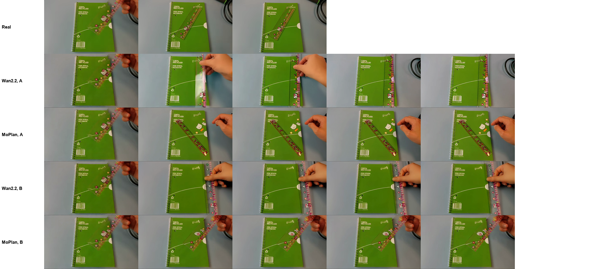
#2Moving the tape down vs. up
One first frame, two instructions. Top (A, the real event): a hand moves the roll of tape down. Bottom (B): the hand moves it up. The untrained Wan2.2 puts the tape down on the pad for both. MoPlan puts it down for A (in front of the pad, and the hand vanishes) and keeps it up for B.
Frames over time
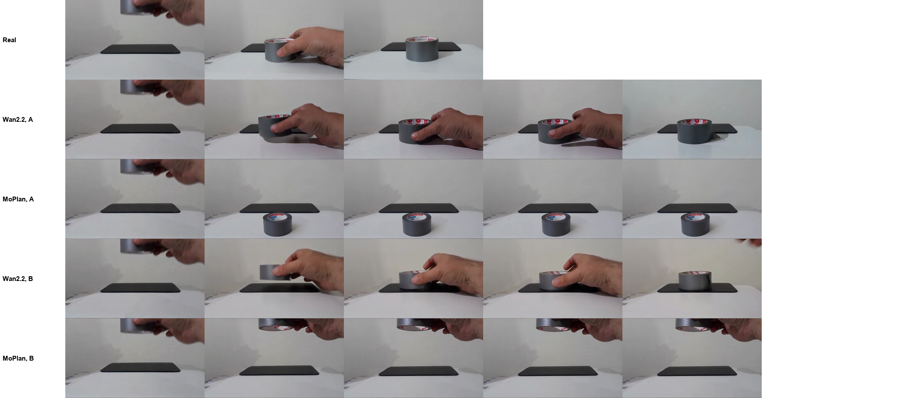
#3Pulling a lighter from left to right
In the real video a hand pulls the lighter to the right. The untrained Wan2.2 does not move the lighter and lights it instead; MoPlan pulls it to the right, as in the real video.
Frames over time
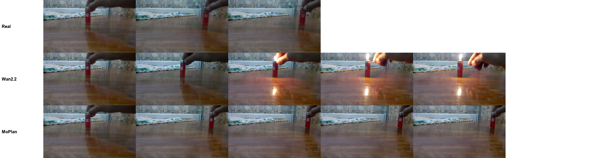
#4Pushing a mug from right to left (the opposite of the real video)
The instruction asks for a push from right to left. The real video shows a push in the other direction, so it is not shown. The untrained Wan2.2 lifts the mug into the air; MoPlan pushes it to the left.
Frames over time
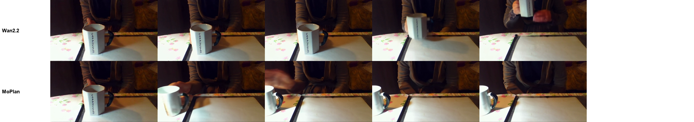
#5Moving the pen toward the spoon; the spoon stays
In the real video a hand moves the pen next to the red spoon and the spoon stays put. The untrained Wan2.2 covers the spoon with the hand and the spoon deforms; MoPlan moves the pen next to the spoon and leaves the spoon in place, as in the real video.
Frames over time
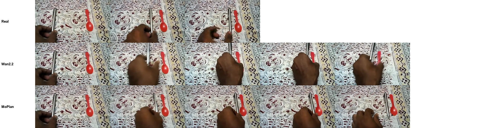
Finding 2: no fabricated agents or objects
When the cause of a motion is not visible, the untrained model tends to invent one: a hand, a tool or new objects. MoPlan moves only the objects that are in the first frame.
#6A wallet falls straight down
The instruction says the wallet falls straight down like a rock; in the real video it lands on the floor. The untrained Wan2.2 conjures a laptop and then a file box out of nowhere; in MoPlan only the wallet falls to the floor, as in the real video.
Instruction: The wallet falls straight down like a rock.
Frames over time
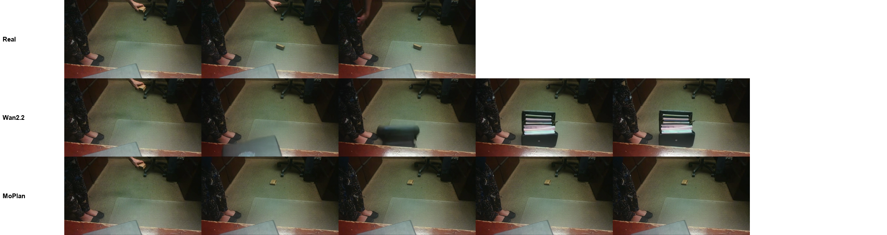
#7Two boxes fall at the same time (real scene)
Two boxes fall in a scene with no person and a fixed camera. The untrained Wan2.2 conjures a giant box that fills the frame while the camera moves; MoPlan keeps the camera fixed and the blue-and-white box lands on the floor. (The reference clip is not shown.)
Instruction: A white box and a blue and white box fall at the same time.
Frames over time
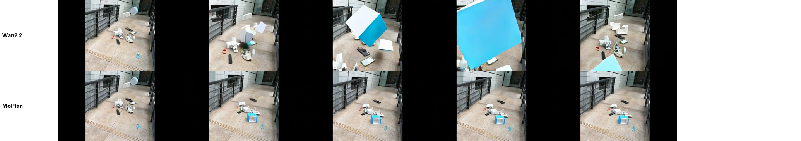
#8Red wrapping paper falls onto a step (real scene)
The paper falls onto the steps; nobody is in the frame and the camera is fixed. The untrained Wan2.2 makes the paper grow larger and larger in the air until it flies into the camera; MoPlan lands it on a step, where it stays. (The real video is not available to us, so only two panels are shown.)
Instruction: A red wrapping paper falls.
Frames over time
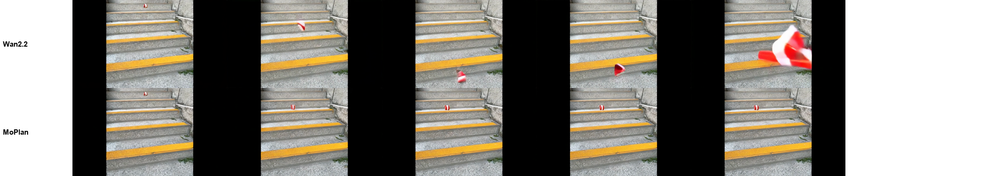
Finding 3: the camera stays fixed when the object moves
The real camera is fixed. Image-to-video models often move the camera with the object; in these examples MoPlan keeps the camera still while the object moves.
#9Putting a sheet of paper down: the camera should not move
The real camera is fixed while a hand puts a sheet of paper on the table. The untrained Wan2.2 pushes the camera in and tilts it down to follow the paper; MoPlan keeps the camera fixed and lays the paper flat, as in the real video.
Instruction: A hand moves the paper down.
Frames over time
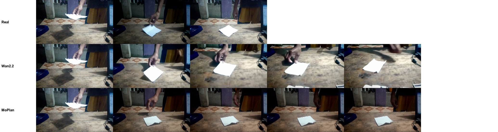
#10Pulling a duster left to right: the camera should not follow
The real camera is fixed while a hand pulls a duster to the right. The untrained Wan2.2 pans the camera with the duster (the background slides); MoPlan keeps the camera still and moves only the duster.
Instruction: A hand pulls the duster from left to right.
Frames over time
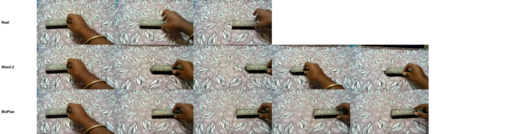
#11Pushing a cup toward a plate: the camera should not push in
The real camera is fixed and the cup is nudged toward the plate. The untrained Wan2.2 pushes the camera in and lifts the cup onto the plate; MoPlan keeps the camera fixed and moves the cup slightly toward the plate, as in the real video.
Instruction: A hand moves the cup closer to the plate; the plate stays where it is.
Frames over time
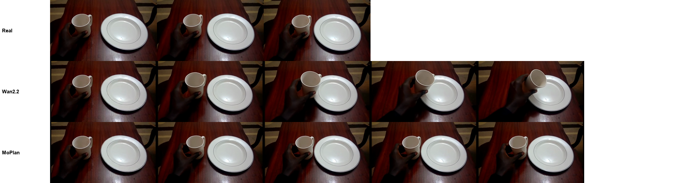
#12Moving two markers apart: the camera should not move
The real camera is fixed; two hands move the markers apart. The untrained Wan2.2 tilts the camera down and the markers leave the frame; MoPlan keeps the camera fixed and moves the markers apart, as in the real video.
Instruction: The first marker and the second marker are moved away from each other.
Frames over time
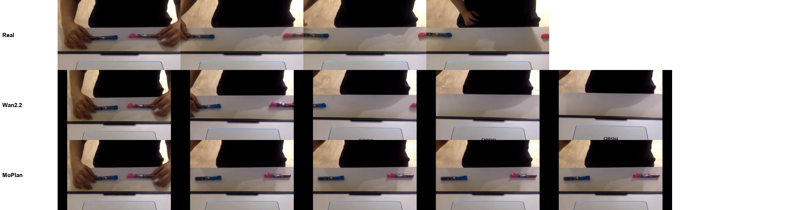
#13Pushing a phone toward a box: the camera should not push in
The real camera is fixed; a hand pushes the phone next to the box. The untrained Wan2.2 pushes the camera in on the box and the phone leaves the frame; MoPlan keeps the camera fixed and moves the phone next to the box, as in the real video.
Instruction: A hand moves the phone closer to the box; the box stays where it is.
Frames over time
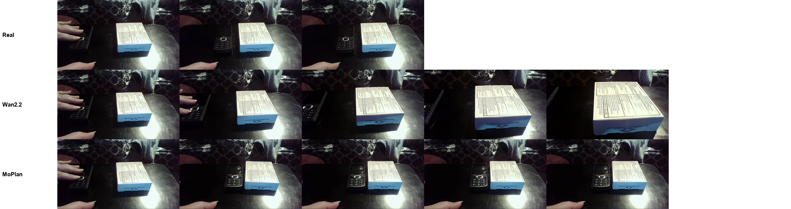
#14Bringing a hair band and a toy car together: the camera should not push in
The instruction asks to move the red hair band and the white toy car closer together. In the real video they are moved apart, so it is not shown (its camera is fixed). The untrained Wan2.2 zooms far in; MoPlan keeps the camera fixed and brings the two together.
Instruction: The red hair band and the white toy car are moved closer to each other.
Frames over time
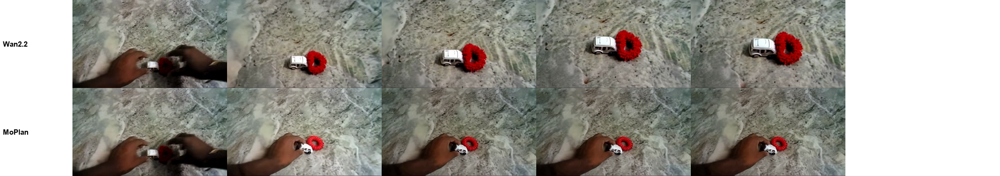
General physical events (Physics-IQ)
Out-of-domain real experiments from Physics-IQ. The real video is the recorded continuation after the conditioning frame.
#15A ball drops into a basket (Physics-IQ)
In the real video the ball drops through the opening and stays in the basket. The untrained Wan2.2 bounces the ball back out and rolls it off screen; MoPlan drops it into the basket, where it stays, as in the real video.
Frames over time
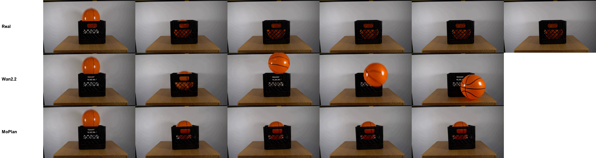
#16A rubber duck falls into a box (Physics-IQ)
In the real video the gripper releases the duck and it falls straight into the box. The untrained Wan2.2 invents a long rod that lowers the gripper into the box and lifts it again (a fabricated agent); MoPlan lets the duck fall into the box.
Frames over time
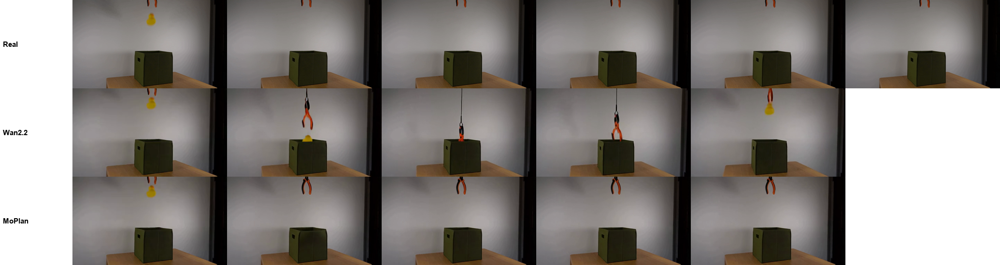
#17Two balls collide and separate (Physics-IQ)
In the real video the blue ball rolls to the lower left and the yellow ball to the upper right after the collision. The untrained Wan2.2 makes the yellow ball jump to the lower-left corner and back; MoPlan separates the two balls along the real directions.
Frames over time
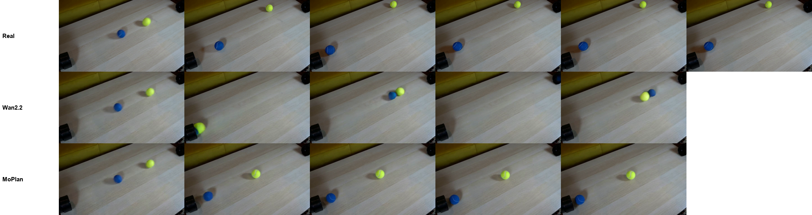
#18A mug drops onto a brick (Physics-IQ)
In the real video the clamp releases the mug and it falls onto the brick and breaks. The untrained Wan2.2 invents a blue robot arm that slowly lowers the mug; MoPlan lets the mug fall onto the brick (it does not break).